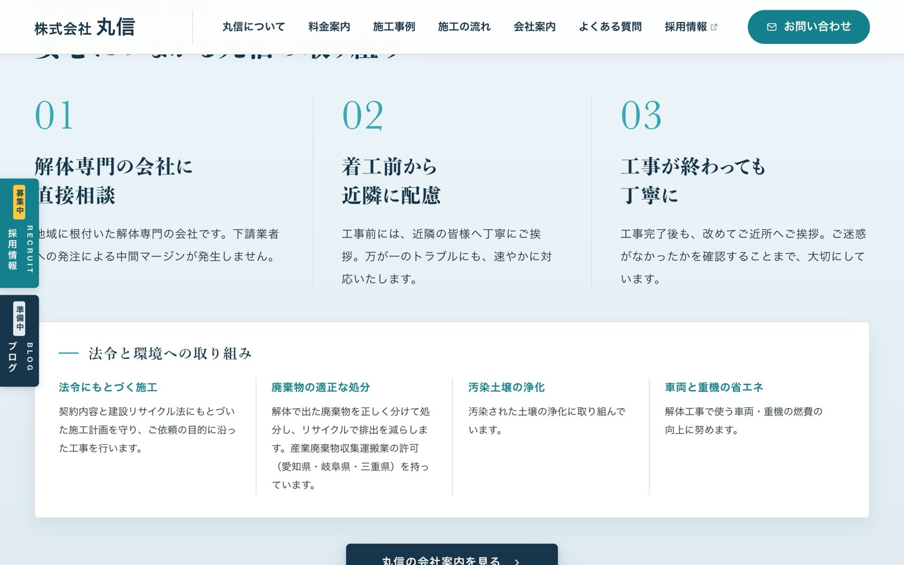
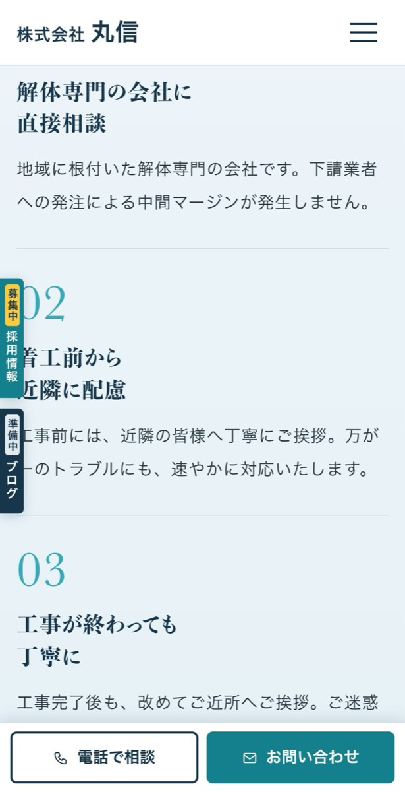
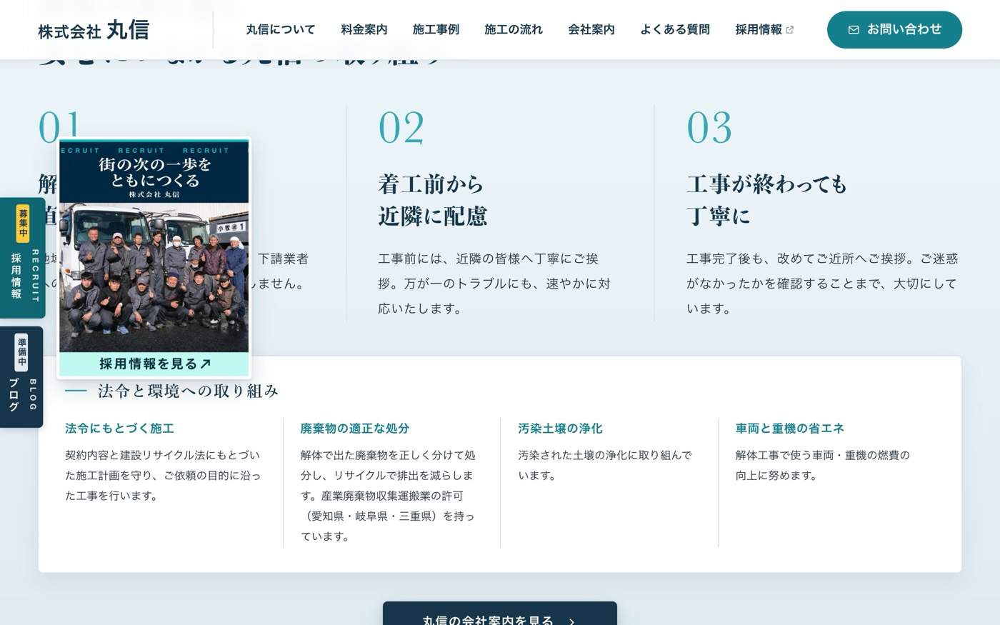
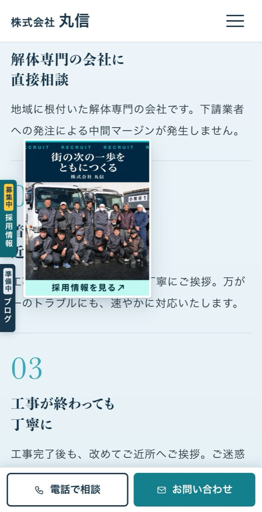

ページを下へ進めると、画面の左端に「採用情報」と「ブログ」の札が出ます。札を押したときにバナーを出すか、はじめからバナーを出しておくかの2案です。
下のボタンから実際のページを開いて、スクロールしたときの見え方をお確かめください。
ふだんは左端に札だけを出します。押すと（パソコンでは札に触れると）バナーが開きます。本文が隠れにくい見せ方です。


札が出ている間は、採用のバナーを開いたままにします。求人がいちばん目に入る見せ方です。ブログの札を押すと、その間だけブログの案内に替わります。

